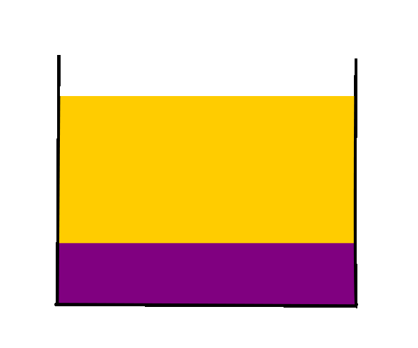
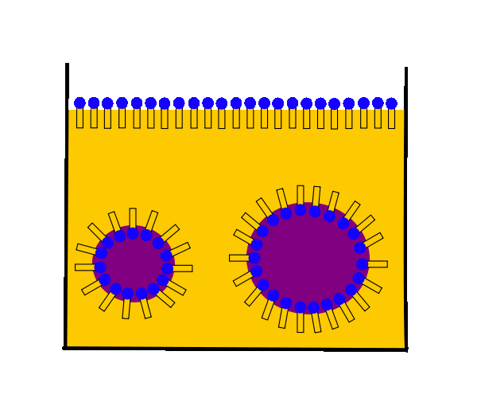

Ein Gemisch aus einer hydrophilen und einer hydrophoben Phase entmischt
sich, da wieder die Ausbildung einer größtmöglichen Anzahl
gleichartiger zwischenmolekularer Kräfte, v.a der starken
Wasserstoffbrückenbindungen, angestrebt wird.
Je nach Dichte liegt eine der beiden Phase weiter oben.

Die Tensidmoleküle ordnen sich an der Grenzfläche zwischen den beiden
Phasen an, stabilisieren die kleinen Wassertröpfchen und verhindern
so eine Entmischung. Da das stabilisierte heterogene
Flüssig/Flüssig-Gemisch als "Emulsion" bezeichnet wird, wirken Tenside
also als "Emulgatoren".